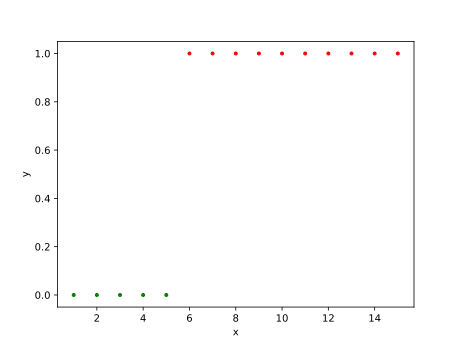

逻辑回归
# 线性回归的不足
当数据的分布情况是这样子的时候， 线性回归得出的模型效果不好： 
于是我们希望有数学模型能够描述这种关系， 这个函数模型即：$ h(x) = \frac{1}{1 + e^{- \theta^{T} x}} $[1]
# 数学原理
# 概率函数
设$ h*{\theta}(x) = \frac{1}{1 + e^{- \theta^{T} x}} $， $ P(y = 1 \mid x ; \theta) = h*{\theta}(x) $， $ P(y = 0 \mid x ; \theta) = 1 - h_{\theta}(x) $， 当$ y \in {0, 1} $时，我们可以这样子优化一下：
$$ P(y \mid x; \theta) = h_{\theta}(x)^{y} (1 - h_{\theta}(x))^{1 - y} $$
当$ y = 1 $时，$ P(y \mid x; \theta) = h_{\theta}(x) $，即$ y = 1 $的概率。
当$ y = 0 $时，$ P(y \mid x; \theta) = 1 - h_{\theta}(x) $，即$ y = 0 $的概率。
优雅！
# 进行极大似然估计
设似然函数：
$$ L(\theta) = \prod_{i=1}^{m} P(y^{(i)} \mid x^{(i)}; \theta) $$
$$ l(\theta) = \frac{\partial}{\partial \theta} L(\theta) $$
可得：
$$ \frac{\partial}{\partial \theta_{j}} l(\theta) = \sum_{i=1}^{m} (y^{(i)} - h_{\theta}(x^{(i)})) x_{j}^{(i)} $$
# 梯度上升求解
类似梯度下降，当函数具有最大值时， 使随机选取的点$ x{0} $进行如下更新[2]：
$$ x_{1} = x_{0} + \alpha \frac{\mathrm d}{\mathrm dx}f(x_{0}) $$
即可得到：
$$ \theta_{j} = \theta_{j} + \partial \sum_{i=1}^{m} {(y^{(i)} - h_{\theta} (x^{(i)}))} x_{j}^{(i)} $$
# 与线性回归的对比
最后推导得出的公式与线性回归的推导公式十分相似， 但实际上$ h_{\theta}(x) $表示的函数不再是线性的， 因此，逻辑回归与线性回归实际上是不相同的。